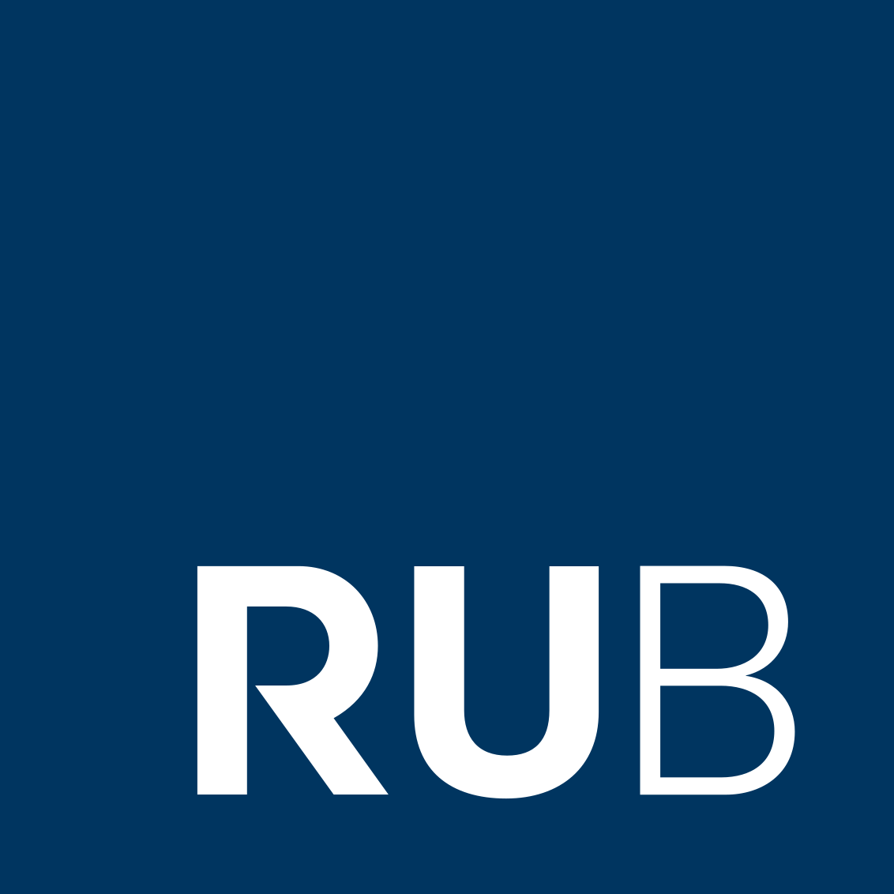
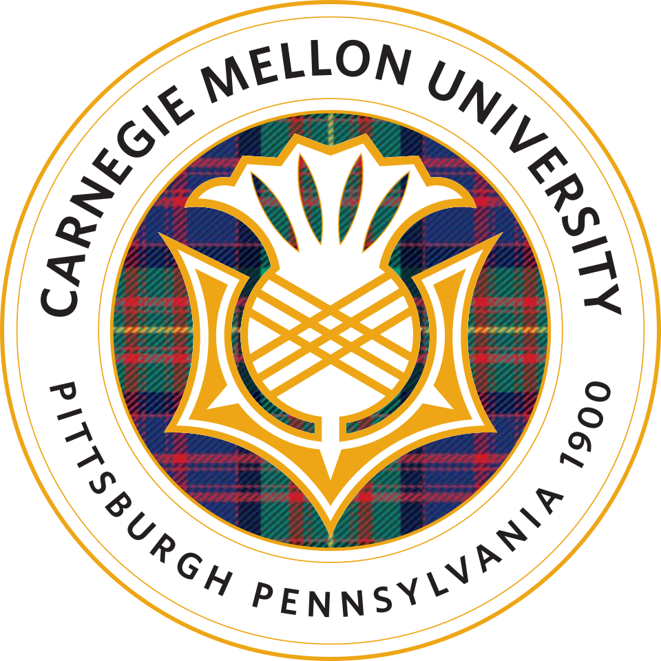
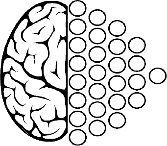

AI Scientist Intern
Mistral AI · May 2026 – August 2026 · Palo Alto
Architecture research for the Streaming and Offline transcription models in
Voxtral v3 (dropping as SoTA soon!), and high-quality data curation for
post-training and evaluations.
Graduate Researcher
Machine Learning Department, CMU · August 2025 – May 2026 · Pittsburgh
Research Engineer Intern
Gan.AI · January 2025 – June 2025 · Delhi
Scraped terabytes of audio data, and trained an internal speech enhancement model.

DAAD WISE Fellow
Ruhr-Universität Bochum · May 2024 – August 2024 · Bochum
Extended the group's
work to the Mamba SSM and
point clouds, and wrote a hardware-aware CUDA implementation.
Research Intern
Deep Forest Sciences · intermittent · remote
Added implementations for MolGAN and normalizing flows in PyTorch, and several tutorials.
Undergraduate Research Assistant
APPCAIR · August 2023 – December 2024 · Goa

M.S. in Machine Learning
Carnegie Mellon University · 2025 – 2026
Coursework

B.E. in Computer Science (Honours), Minor in Data Science
BITS Pilani, Goa Campus · 2021 – 2025
Graduated with distinction. Awarded a merit scholarship (40% fee waiver) for 5 semesters
(top 3% of the batch).
- TA for CS F351: Theory of Computation, Fall'24
- Course mentor for CS F437: Generative AI, Fall'24
- Head TA for BITS F464: Machine Learning, Spring'24
- Head TA for CS F214: Logic in Computer Science, Fall'23
Coursework
Took undergraduate courses with a breadth of systems and ML, from the
CS & IS
core —
Deep Learning, Machine Learning, Computer Networks, Design and Analysis of Algorithms,
Data Structures and Algorithms, Operating Systems, Applied Statistical Methods, AI,
Foundations of Data Science, and a reading course on LLMs.

Society for Artificial Intelligence and Deep Learning
June 2023 – May 2025
Member from June 2023, General Secretary from January 2024, and President from August 2024.
Co-led the
2025 and
2024 induction assignments,
started a blog-post initiative — the first post was accepted to the
GRaM Workshop at ICML'24 — and co-led the
2023 and
2024 AI Symposiums.